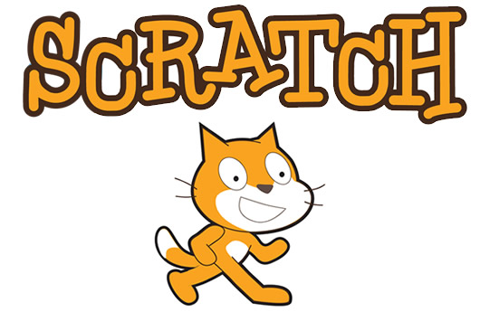

Taller programación con Scratch
Scratch
Scratch es un editor de programas realizado por el MIT (Instituto Tecnológico de Massachusetts) que nos permite trabajar de forma gráfica la programación, a través de bloques gráficos de instrucciones que iteractúan con objetos.
¿Dónde conseguir Scratch?
Sratch 2.0
- Versión Web. Scratch lo tenemos en la página web del proyecto, dónde creamos nuestra cuenta, y en ella podemos editar proyectos (programas), compartirlos y explorar el de toda la comunidad. Todo se hace onĺine, con sus ventajas y desventajas.
- Versión instalable. Funciona bajo Adobe Air y es multiplataforma (GNU/Linux, Windows, MAC OS).
Scratch 1.4
Esta es la versión anterior de Scratch, tiene menos herramientas que la 2.0, pero es muy ligero y funcional, aedmás está instalado en las versiones de Guadalinex que implementa la Consejería de Educación en las dotaciones TIC. Lo podemos descargar de aquí, es multiplataforma (GNU/Linux, Windows, MAC OS).
Obra publicada con Licencia Creative Commons Reconocimiento Compartir igual 4.0